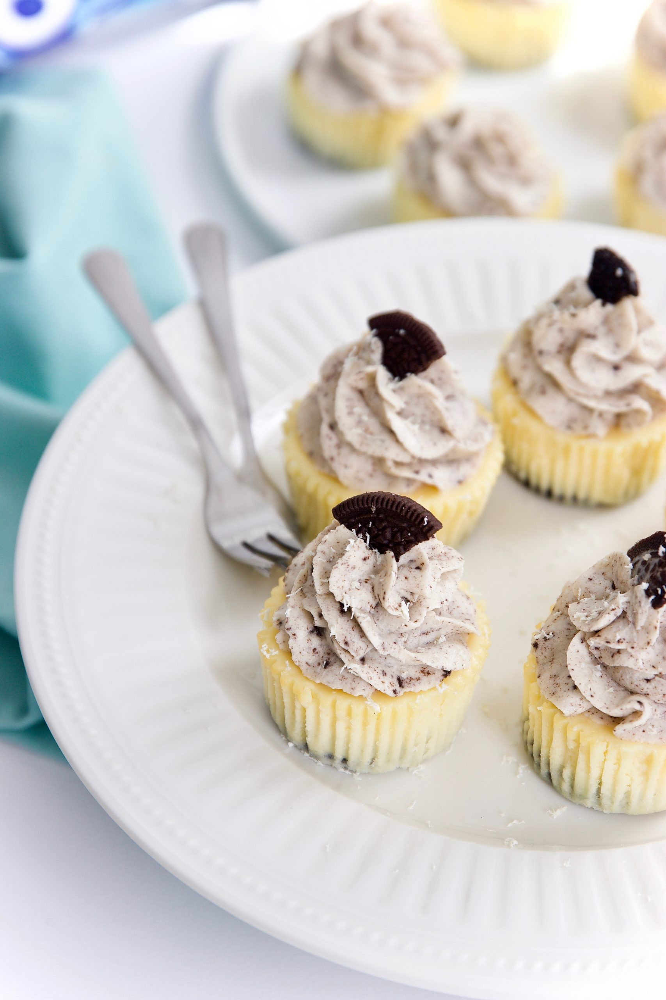

Tartelette basisdeeg

Ingrediënten
- 12 Oreo koekjes
- 200 gram roomkaas
- 150 gram witte basterdsuiker
- 1 zakje vanillesuiker
- 150 gram zure room
- 2 eieren
- 1 el maizena
- snufje zout
Bereiding
- Verwarm de oven voor op 150 graden (boven-onder) warmte.
- Verdeel de muffin papiertjes over de bakvorm en leg in elk vormpje en Oreo. Zet de vorm opzij.
- Leg de roomkaas in een kom en mix het glad met de mixer lage snelheid.
- Voeg de basterdsuiker, vanillesuiker en het zout erbij en mix het romig.
- Ga met de spatel langs de zijkanten en de bodem van de kom en mix het nog eens door.
- Klop de eieren per een in een aparte kom los en giet het ei bij het beslag.
- Mix de eieren door het beslag en mix ook de zure room erbij.
- Zeef de maizena erbij en mixt het kort door het beslag.
- Je kunt er nu voor kiezen om een paar Oreo’s fijn te hakken en door het beslag te roeren.
- Verdeel het beslag in elk vormpje tot ietsjes onder de rand.
- Bak de cheesecakes op 150 graden voor 20-25 minuten gaar.
- De Oreo cheescakes zijn gaar als ze aan de bovenkant niet meer vloeibaar zijn.
- Zet de oven uit en laat de Oreo cheesecakes met de ovendeur op een kiertje voor 60 min. afkoelen.
- Haal de cheesecakes uit de oven en zet ze voor 5 uur of het liefst voor een hele nacht in de koelkast.